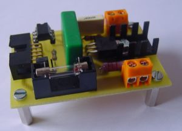
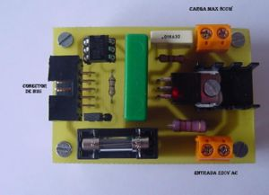
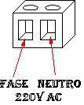
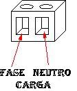

Contenido
[ocultar]Introducción


Tarjeta de prueba con un optoacoplador para controlar un triac. Es Hardware Libre.
Tarjeta de prueba con un optoacoplador para controlar un triac, conector para cable de tipo bus y clemas para la conexión de la carga a manejar y la entrada de 220 voltios. Se conecta directamente a los puertos de la tarjeta Skypic. Se ha desarrollado para poder manejar cargas en corriente alterna no inductivas.
Características
- Triac optoacoplado de 600V y 4A MAX.
- Dimensiones: 65 x 45 mm
- Placa a simple cara
- Conexión a través de un cable plano de tipo bus de 10 hilos, clemas para carga y 220v AC.
- Hardware Libre
- Plataforma de desarrollo: máquina con Windows 2000
- Diseñada con Eagle v4.09r2
Posibles aplicaciones
- Una posible aplicación es conectándola al puerto B de la SkyPic poder encender y apagar un dispositivo conectado a la red electrica, con esta placa unicamente podremos manejar aparatos que no sean inductivos como por ejemplo las bombillas siempre que estas no sean de ahorro de energia.
- En vez de encender o apagar unicamente una bombilla podríamos variar la intensidad ajustando el momento de disparo del triac.
- En general activar y desactivar casi cualquier electrodoméstico que tengamos en casa. Si nos creamos una red de controladores de este tipo o del tipo freerele conectados a nuestra SkyPic y esta a su vez a un ordenador, podríamos crearnos un sistema de domótica para controlar todos los electrodomésticos desde nuestro PC. Para mi esta es una de las aplicaciones mejores y más divertidas que podemos dar a esta pequeña pero no menos potente placa.
Conexión
La Opto-triac dispone de un conector acodado de 10 pines para su control desde la SkyPic y un par de clemas para manejar la carga y la entrada de 220v AC. En la siguientes tablas y figuras se muestran la asignación de los pines.


Disposición conectores en Opto-triac.
Clemas
| Clema entrada 220v AC | Clema control carga |
|---|---|
|  |
 |


Conector de datos
| Puerto de datos |
|---|

|
| Pin | Descripción |
|---|---|
| 1 | No Asignado |
| 2 | B3 Puerto B(SkyPic) |
| 3 | B5 Puerto B(SkyPic) |
| 4 | No Asignado |
| 5 | No Asignado |
| 6 | VCC |
| 7 | No Asignado |
| 8 | No Asignado |
| 9 | No Asignado |
| 10 | No Asignado |